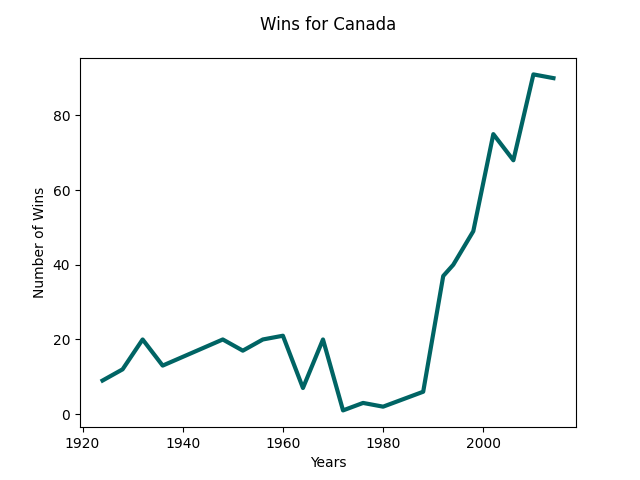
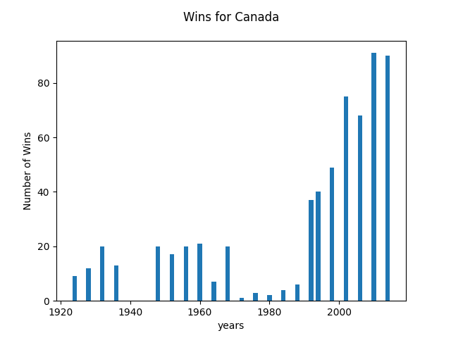
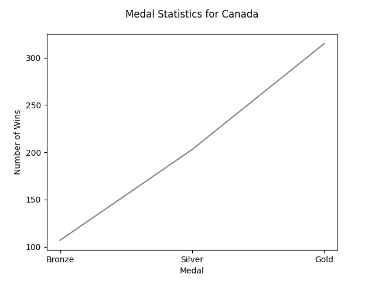
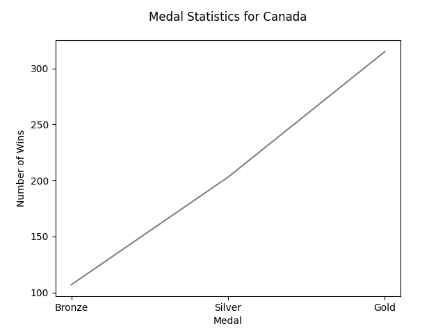
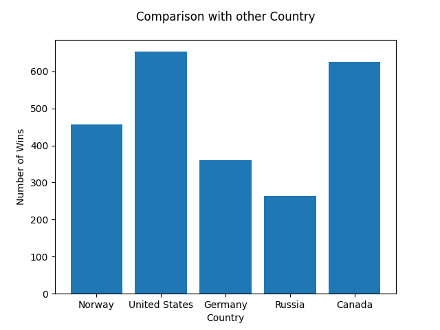
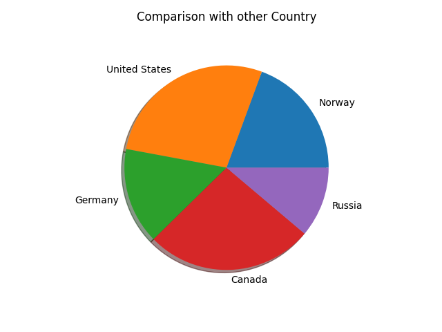

Number of Wins up till 2014
 Team Canada has been one of the strong Winter Olympians for a long time from the 1920s Canada joined the Olympics and started to climb their victories to become one of the strong countries in the winter Olympics. Team Canada won many games in the winter Olympics but they didn't win all the time Canada struggled from the 1970s to 1990s but team Canada have taken back to their throne in winter Olympic from the early 20s
Team Canada's medal statistics
 

As you can see from the pie chart provided on top team Canada has won most of the games in the winter Olympics with gold medals which proves that they are one of the best winter Olympic contenders in the world
Comparision of Wins between other Country and Canada
 When comparing team Canada with another strong winter Olympic participants Canada takes the lead on how many wins they have. The biggest rival for team Canada has is team USA. Their rivalry in the Winter Olympic became a thing since both teams possess an evenly skilled and the fall of their common rival in the winter Olympic the Soviet Union was a start-up point for this rivalry.